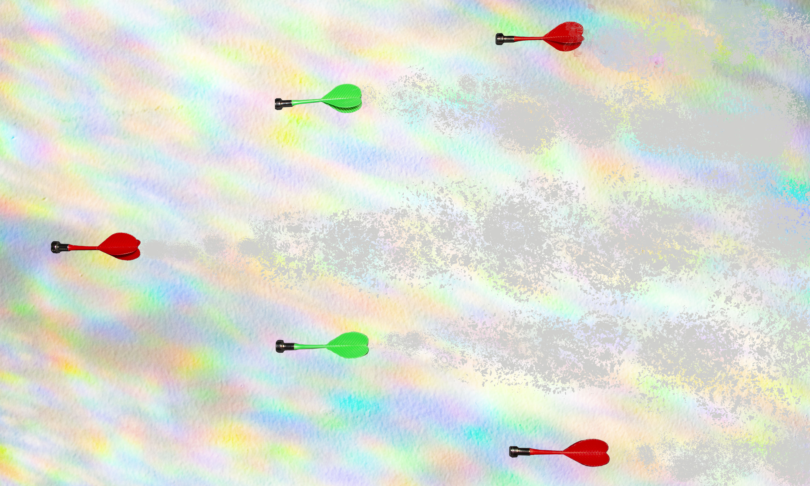

The People’s Union of Living Room is known for its wonderful forms of entertainment. One of the most exciting of these is the Dart Air Show held every weekend outside the city of Darts. Two teams of planes race through the sky with the goal of flying through hoops of different sizes. The most points are awarded for shooting through the smallest circle known as the Bullseye. Crowds travel from all over the world to see these air shows, drinking happily and cheering for their favorite team.